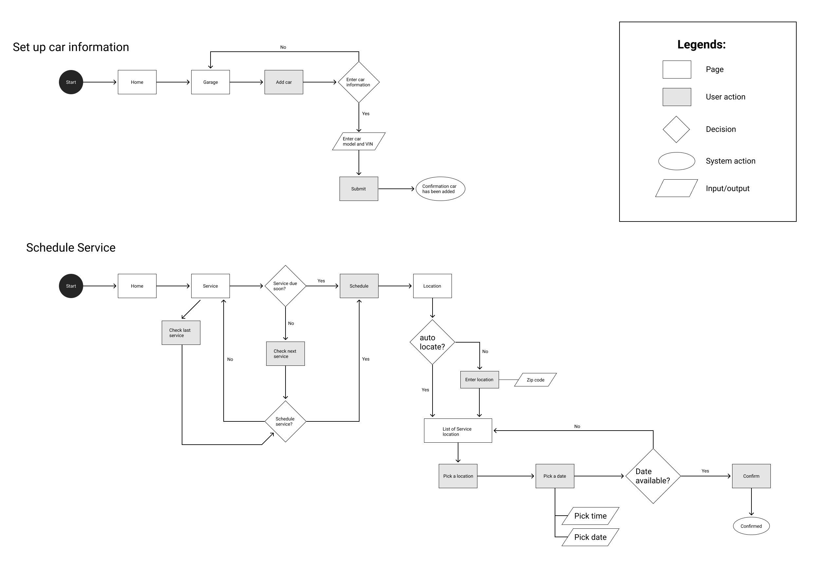
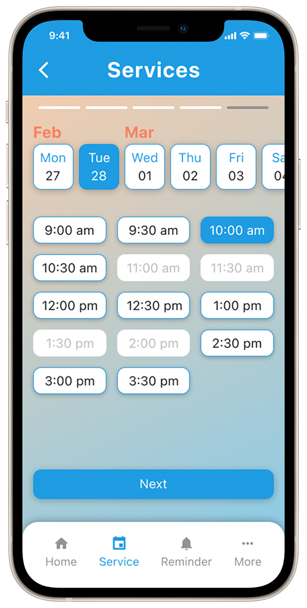
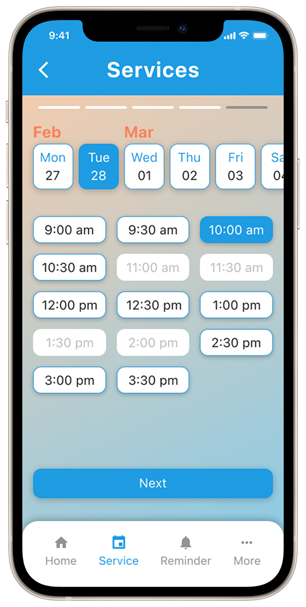

Kura, a car care app

My role
- UX Reseacher
- UI Designer
- UI Prototype
Tools
- Pen & paper
- FigJam
- Figma
Duration
3 months
Summary
This app is designed to help car owners track and maintain their vehicles by providing an intuitive and user-friendly interface. It includes an easy to understand dashboard of the car's performance metric, a calendar of upcoming maintainance tasks and reminders.
Research
I interviewed a group of people to find out what they want to do with their cars when they are not driving. Both formal and informal one on one interviews were conducted to find out the issues car owners might have. There are many things they want to do with their cars, however taking care of their cars is their priority and they wish to have an alternative or a better way rather than relying solely on the car mechanic telling them what to do.
Problem(s)
After interviewing a handful of people, I realized that people want to take better care of their cars so they can drive without any worry. Car owners may have difficulty remembering to do periodic maintenance, understanding how to do DIY maintenance tasks, getting the best performance out of their cars, and finding reliable advice. This app addresses each of these areas by providing an easy-to-use interface for tracking maintenance tasks, step-by-step instructions for DIY tasks, performance metrics to help users understand their car better, and access to a virtual assistant for reliable advice.
Target customers
The target customers for this app would be car owners, mechanics, and DIY enthusiasts. Car owners would appreciate the convenience of having an easy-to-use app to help them keep track of their vehicle's maintenance needs, as well as having access to helpful advice and performance metrics. Mechanics would also benefit from using this app to provide their customers with detailed recommendations for car repairs and maintenance.
Persona
The persona for this app would be any car owner who is looking for an easy way to track and maintain their car. This could include individuals looking to save time and money on car repairs, as well as mechanics

Solution(s)
Based on the research, I came up with a solution that helps car owners with their pain points. A car maintenance app will be designed. The app will help car owners keep track of their car maintenance service history as well as recommend what should be done on the next service schedule.
Competitive analysis
I selected several applications that offer similar maintenance services for cars including CarFax, AUTOsist, Simply Auto, Drivvo, and Car Assistant. The goal was to find out the scope and value they offer to users when it comes to routine car maintenance. Only 1 out of 5 applications offer vehicles’ service histories. None of them allow users to schedule service right from the app.
Ideate
It is essential to understand the user's pain points. Based on what I have researched so far and narrowed it down. I started with a “How might we” series of questions.

One way to help car owners solve their problems is by providing an easy-to-use app that helps them keep track of their car maintenance needs. The app should feature an intuitive interface, with a dashboard of the car's performance metrics, a calendar of upcoming maintenance tasks. Additionally, the app should provide helpful tips and resources on how to save money on car repairs, as well as maximizing the performance of the vehicle.
User Flow
Wireframes
After deciding on the user flow, I moved on to working with the lo-fi wireframe to start visualizing my app so I can have a clearer picture of the direction. I started with pen and paper to quickly bring my ideas to life. This helps me brainstorm ideas for my app layout. Once I'm happy with some of the layout solutions, I moved on to digital low-fidelity wireframe for a more refined version of my app. At this stage, I haven't decided on the detailed visual system yet.

Lo-fidelity wireframes

Usability testing
I did some usability testing to see if the user's goals can be achieved efficiently. I then took feedback collected from the usability testing and kept improving my project accordingly.
Several rounds of usability testing were also conducted during the wireframe phase to keep improving the project.

Branding

App name: Kura - it derives from "cura" in Latin, which means care. As the project is designed to solve car owners’ problems with their car maintenance, I feel Kura is a good name for the app.
Because the goal of this project is to help car owners keep track of their car health and status so they can drive with confidence, blue color was picked as the primary color for this project. Blue represents confidence. Blue is also described as peaceful, secure, and orderly which aligns intending to give users more transparency and accessibility to their cars’ service history.
Hi-fidelity wireframes

 
